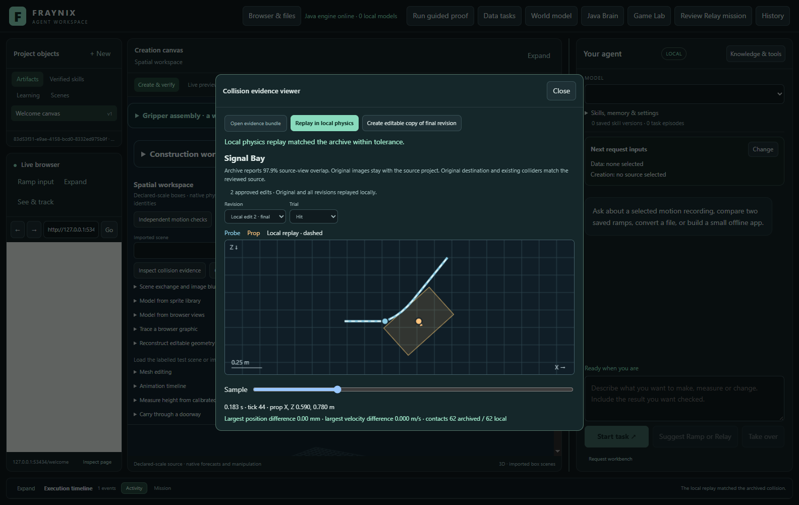
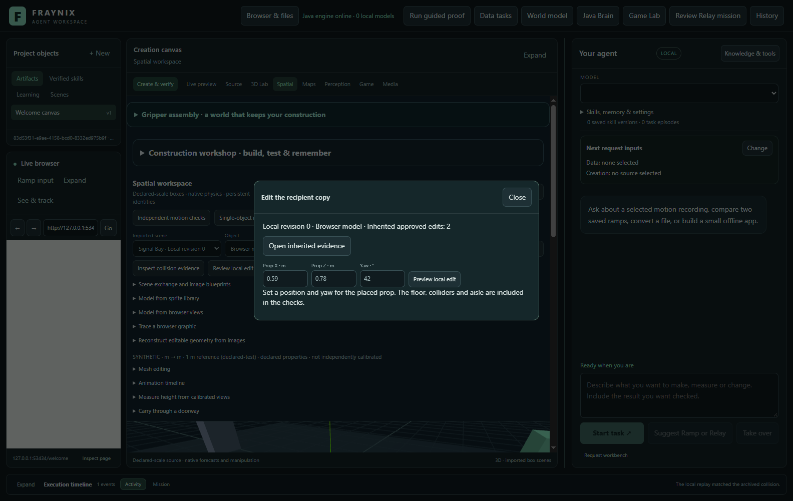
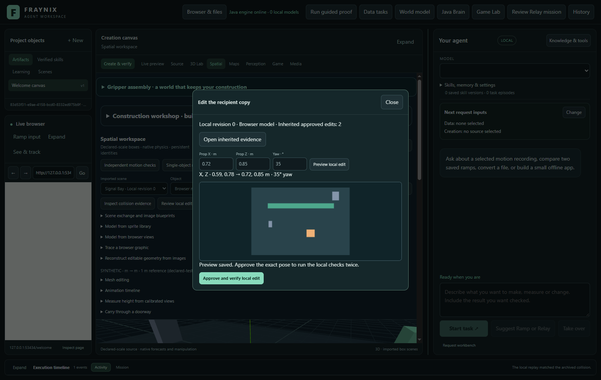
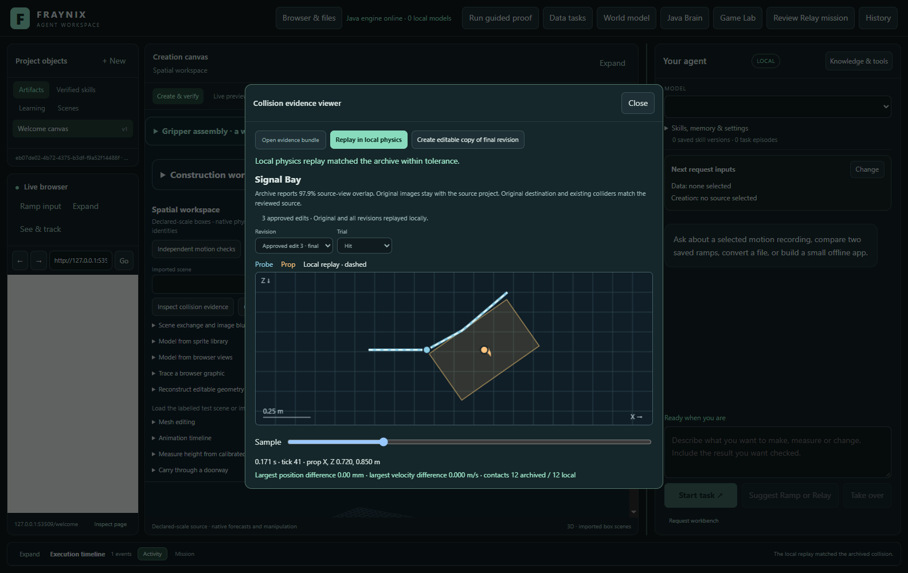

Edit a forwarded revision with fresh local approval
Replay the forwarded Signal Bay scene, create an editable copy of the final pose, and approve one new move in the receiving project.
The third Windows project matched first contact at ticks 75, 48, 44 and 41. All four lateral probes missed, and every 4.35 m aisle cleared.

Local replay makes the final revision available as an editable copy

The local copy starts at the forwarded pose with two inherited approved edits

The new pose is reviewed against the protected walking aisle

A third clean project independently reproduces the newest collision
System files
Open source